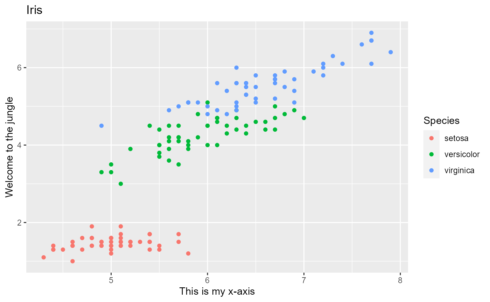
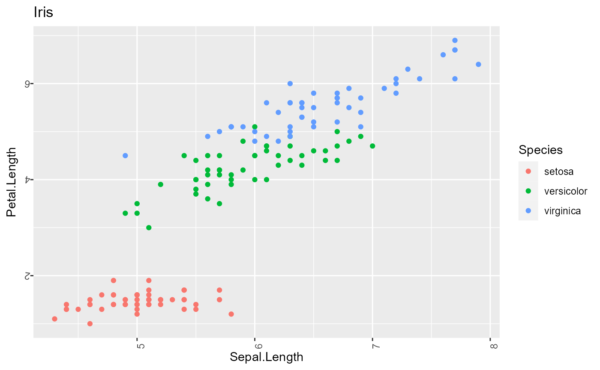
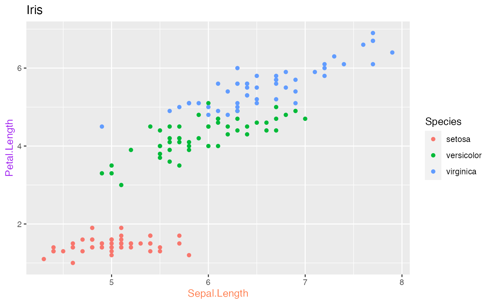
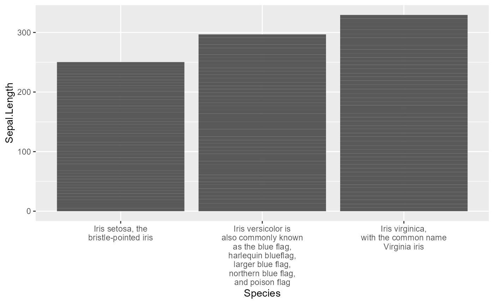

labels.RmdThere are various ways to set the formatting of labels in plots. First and foremost, you may want to change the label text:
ggplot(data=iris,
mapping=aes(x=Sepal.Length,
y=Petal.Length, color=Species))+
ggtitle("Iris")+
geom_point()+
gg_("set the x-axis label to 'This is my x-axis'")+
gg_("The y-axis label should be set to 'Welcome to the jungle', please")
#> Registered S3 method overwritten by 'sets':
#> method from
#> print.element ggplot2
ggplot(data=iris,
mapping=aes(x=Sepal.Length,
y=Petal.Length, color=Species))+
ggtitle("Iris")+
geom_point()+
gg_("Rotate the x-axis labels by 32°")+
gg_("Rotate the y-axis labels by 172 degrees")
The following gg_-commands illustrate how you can have axis labels appear in different colors.
ggplot(data=iris,
mapping=aes(x=Sepal.Length,
y=Petal.Length, color=Species))+
ggtitle("Iris")+
geom_point()+
gg_("Paint the x-axis label in coral.")+
gg_("The label of the y-axis should appear in purple.")
Long labels often produce ugly overlap. Avoid this with the ‘wrap’ keyword.
iris %>% tibble() %>% mutate(Species=recode(Species, 'setosa' = 'Iris setosa, the bristle-pointed iris', 'virginica' = 'Iris virginica, with the common name Virginia iris', 'versicolor'='Iris versicolor is also commonly known as the blue flag, harlequin blueflag, larger blue flag, northern blue flag, and poison flag')) %>% ggplot(aes(x=Species, y=Sepal.Length)) + geom_bar(stat="identity") +
gg_("wrap x-axis labels at 20 characters")